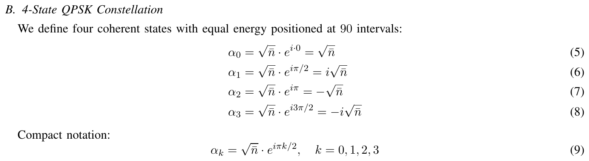
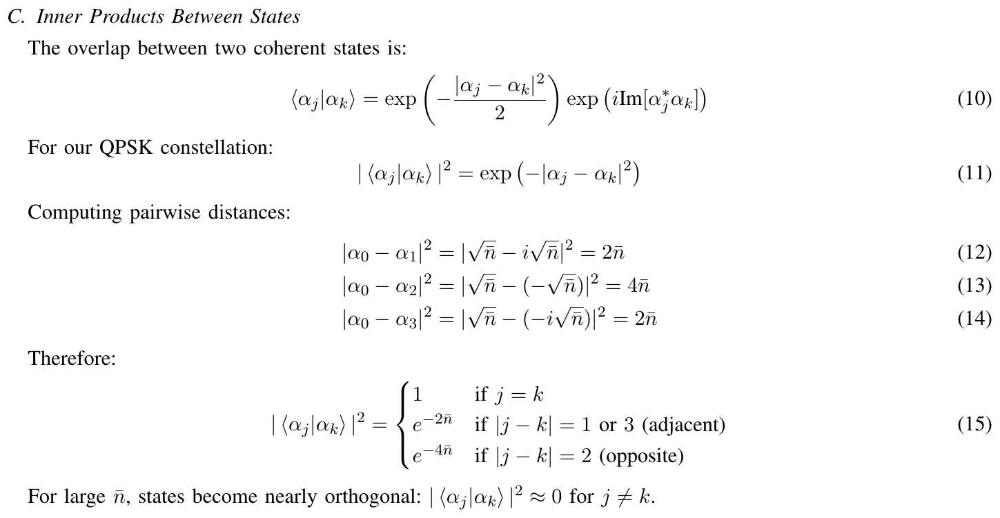
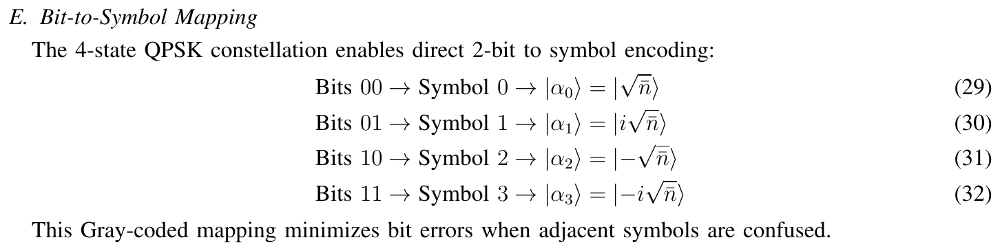
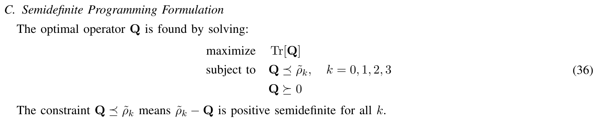
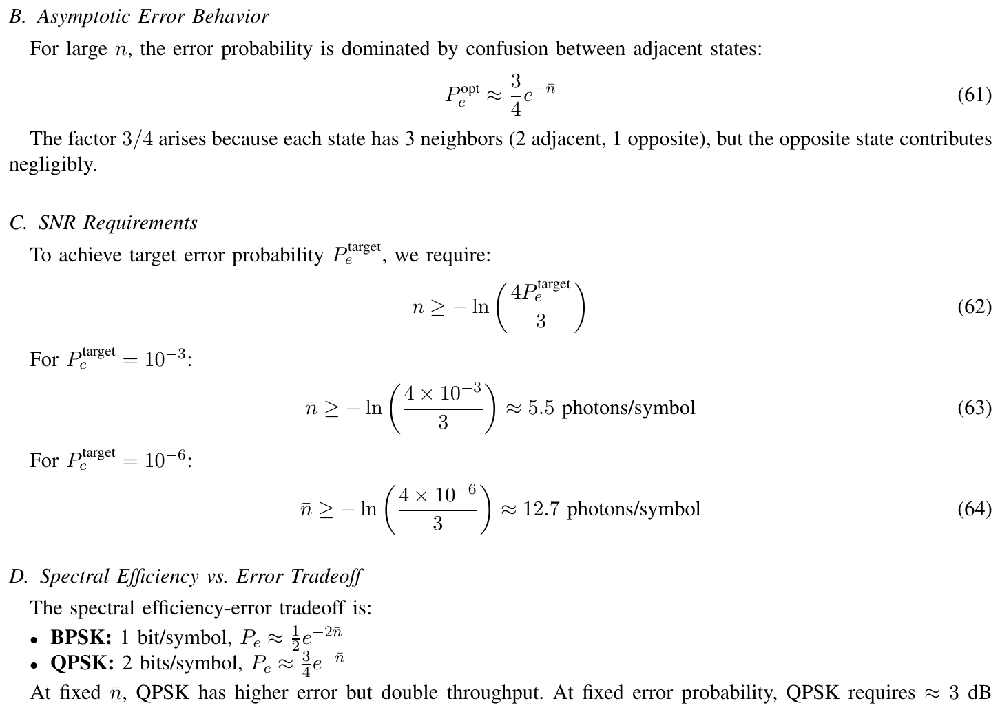
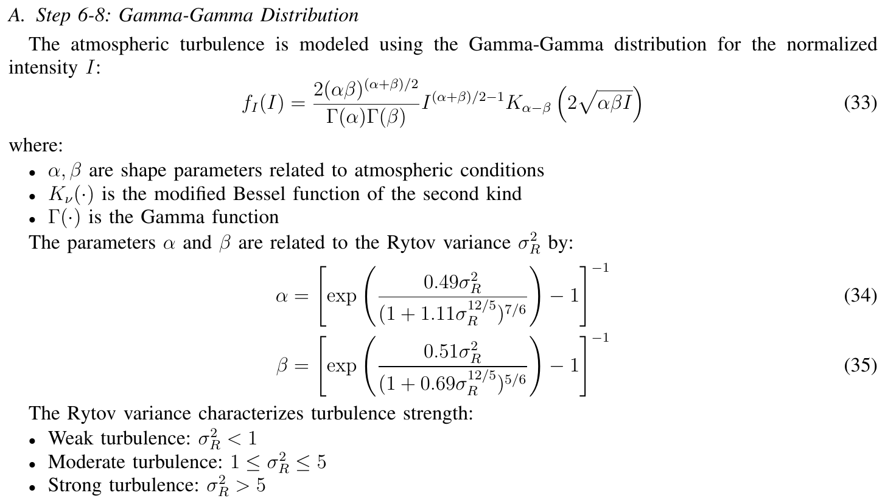
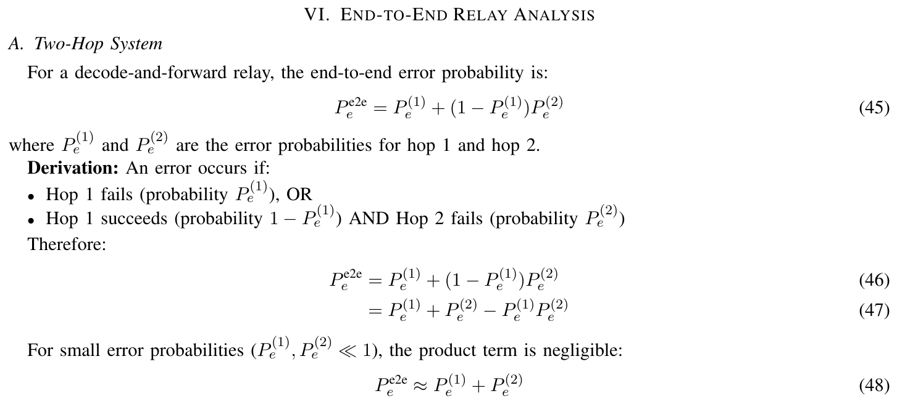
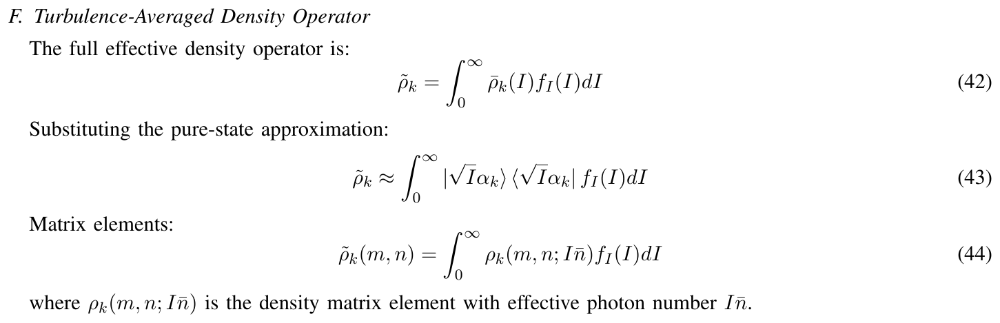
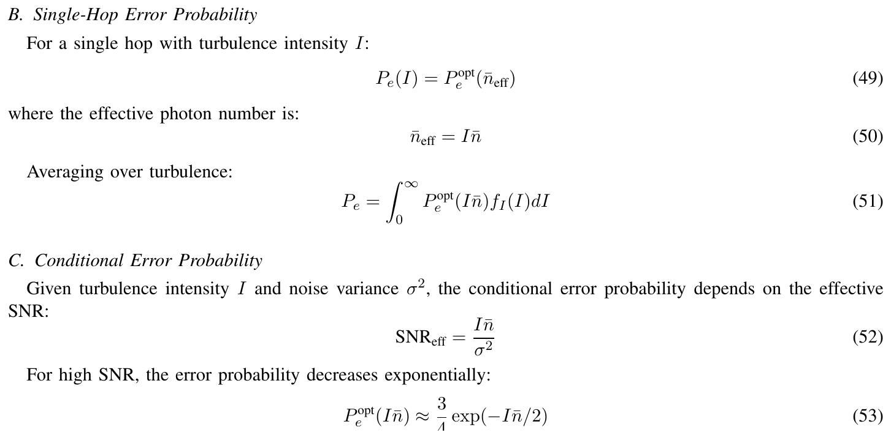
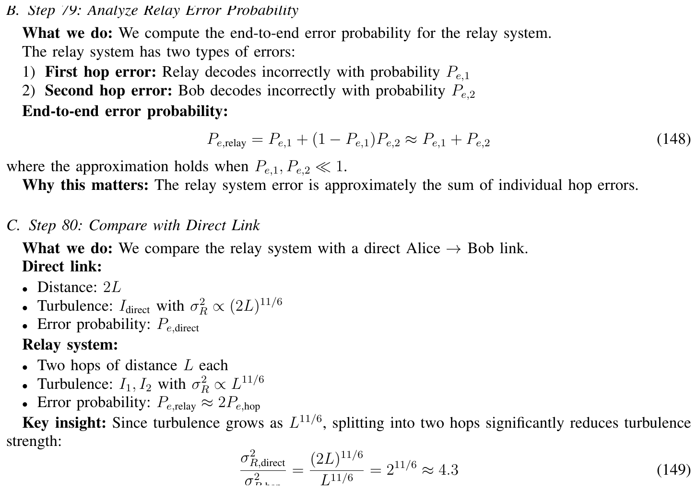

Module 06 · Four-state QPSK: circulant Gram, Z4-symmetric PGM and Gamma-Gamma turbulence
From the 90° constellation to the closed form, noise, relay and the BPSK comparison
- Build the circulant Gram matrix and compute the PGM P_e from four class probabilities
- Explain why the PGM is optimal under Z4 symmetry and when it stops being so
- Spot the numerical errors in the source documents (¾e^{-n̄}, 2^{11/6}, Gray labels)
- Compare QPSK with BPSK per symbol and per bit energy
- Compute the end-to-end error of a decode-and-forward relay
📚 Source documents of this module (each file checked against its actual content)
| File in the archive | Paper (verified against its content) | Pages | Status | Used in this module |
|---|---|---|---|---|
| Detail 4 State Implementation - 82 Steps.pdf | Detailed 82-Step Derivation: 4-State QPSK Quantum Free-Space Optical Communication Through Atmospheric Turbulence Quantum AI Lab · 2026 · Internal report | 26 | Read, title matches | Steps 78-82 (relay), Step 76 (cost), Eq. (149) |
| Detail 4 State Implementation.pdf | Mathematical Implementation of 4-State QPSK Modulation for Quantum Free-Space Optical Relay Systems Quantum AI Lab · 2026 · Internal report | 14 | Read, title matches | Eq. (4)-(32), Gamma-Gamma Eq. (33)-(35) |
| Math_Analysis_Short_Format_Paper_Like_4States_QPSK.pdf | Complete Mathematical Analysis of 4-State QPSK Modulation for Quantum FSO Relay Systems Quantum AI Lab · 2026 · Internal report | 9 | Read, title matches | Eq. (5)-(64): constellation, Gram, SDP, relay, asymptotics |
| Steps_Critical_Analysis_4State_QPSK.md | Critical Analysis of 4-State QPSK Quantum FSO Implementation Quantum AI Lab · 2026 · Markdown | 1 | Partly read (long book) | BPSK/QPSK comparison table; several numbers checked and corrected |
| Test 4 state.md | Comprehensive Analysis: Extending Quantum FSO Relay to 4-State QPSK Modulation Quantum AI Lab · 2026 · Markdown | 1 | Partly read (long book) | P_e-versus-n̄ table and the 6 dB penalty fail recomputation (see case study) |
| PROMPTS_FOR_4STATE_ANALYSIS.md | Prompt chain for the 4-state analysis Quantum AI Lab · 2026 · Markdown | 1 | Partly read (long book) | Workflow only, no formulas |
Lecture (slides)
Use the ← → keys or the buttons; ⛶ opens full-screen presentation.
The four-state coherent constellation

Nguồn: Quantum AI Lab, Math_Analysis_Short_Format_Paper_Like_4States_QPSK, 2026, Eq. (5)-(9), tr. 2
- \(\bar n\)mean photons per symbol
- \(k\)symbol index, each step a 90° turn
Coherent states and photon statistics
- \(|n\rangle\)n-photon state
- \(P(n)\)probability of counting n photons
From \(\hat a|\alpha\rangle=\alpha|\alpha\rangle\) we get \(\bar n=\langle\alpha|\hat a^\dagger\hat a|\alpha\rangle=|\alpha|^2\) and \(\mathrm{Var}(n)=\bar n\). For QPSK, \(\alpha_k=\sqrt{\bar n}\,i^k\), so all four symbols share one Poisson law and differ only in the phase of each Fock amplitude.
| n̄ | P(0) | P(1) | P(2) | P(3) |
|---|---|---|---|---|
| 0.5 | 0.607 | 0.303 | 0.0758 | 0.0126 |
| 1 | 0.368 | 0.368 | 0.184 | 0.0613 |
| 2 | 0.135 | 0.271 | 0.271 | 0.18 |
Overlaps between states

Nguồn: Quantum AI Lab, Math_Analysis_Short_Format_Paper_Like_4States_QPSK, 2026, Eq. (10)-(15), tr. 2
The general rule \(|\langle\alpha_j|\alpha_k\rangle|^2=e^{-|\alpha_j-\alpha_k|^2}\) gives \(|\alpha_0-\alpha_1|^2=2\bar n\) and \(|\alpha_0-\alpha_2|^2=4\bar n\).
The Gram matrix of the four states
- \(g_m\)first row of G; later rows are cyclic shifts
- \(g_0=1\)normalisation
Since \(G_{jk}\) depends only on \((k-j)\bmod 4\), \(G\) is circulant: \(g_1=e^{\bar n(i-1)}\), \(g_2=e^{-2\bar n}\), \(g_3=\overline{g_1}\). Moduli: \(|g_1|=e^{-\bar n}\), \(|g_2|=e^{-2\bar n}\).
| n̄ | |g₁| = e^{-n̄} | |g₂| = e^{-2n̄} | |g₁|² (adjacent) | |g₂|² (opposite) |
|---|---|---|---|---|
| 0.5 | 0.6065 | 0.3679 | 0.3679 | 0.1353 |
| 1 | 0.3679 | 0.1353 | 0.1353 | 0.01832 |
| 2 | 0.1353 | 0.01832 | 0.01832 | 3.355×10-4 |
Density matrices in the Fock basis
- \(U\)90° phase rotation, diagonal in the Fock basis
- \(\rho_k(m,n)\)Fock-basis density-matrix element
The diagonal \(\rho_k(n,n)=e^{-\bar n}\bar n^n/n!\) is the same for all \(k\); only the phase \(e^{i\pi k(m-n)/2}\) tells symbols apart. \(\mathrm{Tr}\,\rho_k=1\), \(\mathrm{Tr}\,\rho_k^2=1\).
| n̄ | N = ⌈3n̄+10⌉ | tail P(n≥N) | N = ⌈n̄+10√n̄⌉ | tail P(n≥N) |
|---|---|---|---|---|
| 2 | 16 | 4.80×10-10 | 17 | 5.61×10-11 |
| 5 | 25 | 1.60×10-10 | 28 | 9.93×10-13 |
| 10 | 40 | 7.34×10-13 | 42 | 4.20×10-14 |
Mapping bits to symbols

Nguồn: Quantum AI Lab, Detail 4 State Implementation, 2026, Eq. (29)-(32), tr. 5
Spectral efficiency is \(\eta=\log_2 4=2\) bit/symbol, twice BPSK. With Gray labels, neighbours differ in one bit so \(\mathrm{BER}\approx\mathrm{SER}/2\).
Timeline: from the Helstrom bound to quantum QPSK
The Helstrom problem for four states
- \(\Pi_k\)POVM element: the verdict "symbol k was sent"
- \(1/4\)equal priors

Nguồn: Quantum AI Lab, Math_Analysis_Short_Format_Paper_Like_4States_QPSK, 2026, Eq. (36), tr. 5
SDP duality and optimality conditions
- \(Y\)Hermitian dual variable
- \(Y^\star\)optimiser
- \(\Pi_k(\tfrac14\rho_k-Y)=0\)complementary slackness: Π_k lives only where ρ_k is strong enough
The document writes \(P_e^{\min}=1-4\,\mathrm{Tr}\,Y^\star\) (Eq. 61); with the constraint \(Y\preceq\tfrac14\rho_k\) the correct form is \(1-\mathrm{Tr}\,Y^\star\).
Square-root measurement for pure states
- \(S\)sum of the density matrices
- \(S^{-1/2}\)inverse square root on the support of S
For pure states \(\rho_k=|\psi_k\rangle\langle\psi_k|\) with Gram matrix \(G\), what matters is \(\sqrt G\): \(P_c=\frac14\sum_k\bigl[(\sqrt G)_{kk}\bigr]^2\). Only a \(4\times4\) matrix is needed, no Fock basis.
The PGM is optimal thanks to Z4 symmetry
- \(|f_l\rangle\)fixed Fourier vectors, independent of n̄
- \(p_l\)probability that n lies in class n mod 4 = l
Because \(G\) is circulant, its eigenvalues are the Fourier transform of the first row, and the PGM reaches the Helstrom bound (Eldar and Forney, 2001: geometrically uniform states). Numerical check: \(\lambda_{\min}(Y-\tfrac14\rho_k)\approx -10^{-17}\) for \(\bar n\in\{0.5,1,2\}\), so the Holevo condition holds.
Closed form of P_e via four class probabilities
- \(p_0+p_1+p_2+p_3=1\)normalisation
- \(\cosh,\sinh,\cos,\sin\)Taylor sums over the fourth roots of unity
| n̄ | p₀ | p₁ | p₂ | p₃ | P_e = 1−¼(Σ√p)² |
|---|---|---|---|---|---|
| 0.5 | 0.6081 | 0.3034 | 0.07583 | 0.01264 | 0.2617 |
| 1 | 0.3832 | 0.3709 | 0.1845 | 0.06139 | 0.09242 |
| 2 | 0.2264 | 0.307 | 0.2827 | 0.1839 | 0.009553 |
| 3 | 0.226 | 0.2529 | 0.2753 | 0.2459 | 0.00124 |
Tail approximation of the error probability
- \(\tfrac14|g_1|^2\)Helstrom error of one pair at priors 1/2 each
- \(\tfrac12\)weight of the two states in the pair (1/4+1/4)
The ratio \(P_e^{\mathrm{PGM}}/(\tfrac12e^{-2\bar n})\) is 1.043 at \(\bar n=2\), 1.00034 at \(\bar n=3\) and 1.0000011 at \(\bar n=6\).
Computing P_e at n̄ equal to 1
- \(\sqrt{p_l}\)roots of the four class probabilities
| Step | Computation | Result |
|---|---|---|
| 1 | \(|g_1|=e^{-1}\) | 0.36788 |
| 2 | \(p_0=\tfrac12e^{-1}(\cosh1+\cos1)\) | 0.38322 |
| 3 | roots of the four probabilities | 0.619, 0.6091, 0.4295, 0.2478 |
| 4 | \(P_e=1-\tfrac14(\sum\sqrt{p_l})^2\) | 0.092421 |
| 5 | vs BPSK at the same n̄ | 0.0046 |
P_e table for QPSK and BPSK
- \(2e^{2\bar n}\)asymptotic ratio, growing exponentially
| n̄ | P_e QPSK | P_e BPSK | ratio | ½e^{-2n̄} |
|---|---|---|---|---|
| 1 | 0.09242 | 0.0046 | 20.1 | 0.06767 |
| 2 | 0.009553 | 8.387×10-5 | 114 | 0.009158 |
| 3 | 0.00124 | 1.536×10-6 | 807 | 0.001239 |
| 4 | 1.678×10-4 | 2.813×10-8 | 5.96e+03 | 1.677×10-4 |
| 6 | 3.072×10-6 | 9.438×10-12 | 3.26×105 | 3.072×10-6 |
At equal \(\bar n\) per symbol, QPSK errs 114 times more than BPSK at \(\bar n=2\). The source tables list other values; the numbers here are recomputed.
Photons needed for a target P_e

Nguồn: Quantum AI Lab, Math_Analysis_Short_Format_Paper_Like_4States_QPSK, 2026, Eq. (61)-(64), tr. 8
| target P_e | QPSK n̄ (recomputed) | n̄ by Eq. (62) | n̄ BPSK | gap (dB) |
|---|---|---|---|---|
| 10⁻³ | 3.107 | 6.62 | 1.381 | 3.52 |
| 10⁻⁶ | 6.561 | 13.53 | 3.107 | 3.25 |
Solving \(P_e(\bar n)=P^\ast\) for \(P^\ast=10^{-3}\) gives \(\bar n=\)3.107, not 5.5.
Comparison at equal energy per bit
- \(E_b\)mean photons per bit
- \(\bar n_{\mathrm{QPSK}}\)two bits share one symbol
| \(E_b\) | BER BPSK | QPSK SER at n̄=2E_b | SER/2 |
|---|---|---|---|
| 0.5 | 0.03506 | 0.09242 | 0.04621 |
| 1 | 0.0046 | 0.009553 | 0.004777 |
| 1.5 | 6.201×10-4 | 0.00124 | 6.199×10-4 |
| 2 | 8.387×10-5 | 1.678×10-4 | 8.390×10-5 |
| 3 | 1.536×10-6 | 3.072×10-6 | 1.536×10-6 |
Counted per bit, the two formats reach the same tail BER; QPSK just doubles n̄ per symbol.
Gamma-Gamma turbulence raises P_e

Nguồn: Quantum AI Lab, Detail 4 State Implementation, 2026, Eq. (33)-(35), tr. 5
| \(\sigma_R^2\) | α | β | Var(I) | QPSK P_e, n̄=4 | BPSK P_e, n̄=4 |
|---|---|---|---|---|---|
| 0.5 | 5.978 | 4.398 | 0.433 | 0.0146 | 0.00103 |
| 4.0 | 4.341 | 1.309 | 1.17 | 0.0684 | 0.0139 |
The average \(P_e=\int P_e^{\mathrm{opt}}(I\bar n)f_I(I)\,dI\) uses Gauss-Legendre quadrature in \(\log I\). The document states \(\alpha\approx11.6,\beta\approx10.1\) at \(\sigma_R^2=0.5\); recomputed: 5.978 and 4.398.
Two-hop relay and the confusion matrix

Nguồn: Quantum AI Lab, Math_Analysis_Short_Format_Paper_Like_4States_QPSK, 2026, Eq. (45)-(48), tr. 6
| n̄ | single-hop P_e | exact end-to-end | P₁+P₂−P₁P₂ | 2P_e |
|---|---|---|---|---|
| 1.0 | 0.09242 | 0.1728 | 0.1763 | 0.1848 |
| 1.5 | 0.02934 | 0.05743 | 0.05782 | 0.05868 |
| 2.0 | 0.009553 | 0.01897 | 0.01902 | 0.01911 |
Exact: \(P^{\mathrm{e2e}}=1-\bigl(C^2\bigr)_{00}\) with \(C\) the PGM confusion matrix. The \(P_1+P_2-P_1P_2\) rule is a little high because it ignores two errors cancelling.
The error-exponent trap
| n̄ | exact P_e | \(\tfrac12e^{-2\bar n}\) | \(\tfrac34e^{-\bar n}\) | \(\tfrac34e^{-\bar n}\) / exact |
|---|---|---|---|---|
| 1 | 0.09242 | 0.06767 | 0.2759 | 2.99 |
| 2 | 0.009553 | 0.009158 | 0.1015 | 10.6 |
| 3 | 0.00124 | 0.001239 | 0.03734 | 30.1 |
| 4 | 1.678×10-4 | 1.677×10-4 | 0.01374 | 81.9 |
| 6 | 3.072×10-6 | 3.072×10-6 | 0.001859 | 605 |
- \(e^{-\bar n}\)is the modulus, not yet squared
The Gray-label trap
| Labels (symbols 0,1,2,3) | BER, n̄=2 | \(\mathrm{BER}/(\mathrm{SER}/2)\) |
|---|---|---|
| 00, 01, 10, 11 | 0.007127 | 1.49 |
| 00, 01, 11, 10 (Gray) | 0.004853 | 1.02 |
SER \(=\)0.009553. Only Gray labels give \(\mathrm{BER}\approx\mathrm{SER}/2\) (Eq. 69); the 82 Steps file lists 00, 01, 11, 10 correctly.
Additive noise makes the states mixed

Nguồn: Quantum AI Lab, Math_Analysis_Short_Format_Paper_Like_4States_QPSK, 2026, Eq. (42)-(44), tr. 5
- \(\rho_{\mathrm{th}}(\sigma^2)\)thermal state with n̄_th = σ²
- \(\epsilon\sim\mathcal{CN}(0,\sigma^2)\)complex noise
Check: purity 0.83333 at \(\sigma^2=0.1\) and 0.625 at \(\sigma^2=0.3\), matching \(1/(1+2\sigma^2)\). The "pure" approximation of Eq. (41) therefore holds only for \(\sigma^2\ll1\).
PGM versus SDP with additive noise
- \(\tilde\rho_k\)state after averaging over turbulence and noise
- \(P_e^{\mathrm{opt}}\)iterated POVM, Holevo condition met
| \(\bar n\) | \(\sigma^2\) | pure P_e | P_e PGM | optimal P_e | PGM / optimal |
|---|---|---|---|---|---|
| 1.0 | 0.1 | 0.0924 | 0.1925 | 0.1518 | 1.27 |
| 2.0 | 0.1 | 0.00955 | 0.05153 | 0.0398 | 1.29 |
| 2.0 | 0.5 | 0.00955 | 0.1962 | 0.1427 | 1.37 |
| 3.0 | 0.3 | 0.00124 | 0.05563 | 0.04054 | 1.37 |
Z4 symmetry survives, but the mixed states lose the property that makes the PGM optimal; an SDP or POVM iteration is needed.
Sensitivity to phase error
- \(\varphi\)phase mismatch between transmitter and receiver
- \(\Pi_k\)PGM designed for the unrotated constellation
| \(\varphi\) (°) | 0 | 1 | 2 | 5 | 10 | 20 |
|---|---|---|---|---|---|---|
| \(\bar n=3\) | 0.00124 | 0.00215 | 0.00489 | 0.0238 | 0.0885 | 0.305 |
| \(\bar n=6\) | 3.07×10-6 | 0.00183 | 0.00729 | 0.0446 | 0.167 | 0.515 |
At \(\bar n=6\), \(P_e\) rises to 0.00183 with only 1° of mismatch, versus 3.07×10-6 in phase. A phase floor dominates the tail, which explains the strict phase-stability demand in the document.
Numerical check that the square is optimal
- \(\theta_k\)angle of symbol k on the equal-energy circle
| Angle set (°) | optimal P_e, n̄=1 | optimal P_e, n̄=2 |
|---|---|---|
| 0-90-180-270 | 0.09242 | 0.009553 |
| 0-80-180-260 | 0.09708 | 0.01192 |
| 0-100-180-280 | 0.09708 | 0.01192 |
| 0-60-180-240 | 0.1357 | 0.03625 |
| 0-45-90-135 | 0.2883 | 0.1432 |
The optimal POVM comes from iterating from the PGM; the square always gives the smallest error, confirming the document’s symmetry argument numerically.
SDP cost and the benefit of symmetry

Nguồn: Quantum AI Lab, Math_Analysis_Short_Format_Paper_Like_4States_QPSK, 2026, Eq. (49)-(53), tr. 6
- \(N\)truncated Fock dimension
- \(M\)SDP iterations
The document estimates 60 ms per \((I,\epsilon)\) sample and \(20\times2000\times60\,\mathrm{ms}=40\) minutes (Step 76). For pure states Z4 symmetry replaces the SDP by a closed form.
The relay shortens the link

Nguồn: Quantum AI Lab, Detail 4 State Implementation - 82 Steps, 2026, Steps 78-80, Eq. (148)-(149), tr. 25
- \(2^{11/6}\)equals 3.564; Eq. (149) prints 4.3, which is wrong
Relay versus direct link
- \(\sigma_R^2=0.995\)C_n²=5×10⁻¹⁴, λ=1.55 µm, L=1000 m (illustration)
| \(\bar n\) per hop | one hop | two-hop relay | direct 2L | relay / direct |
|---|---|---|---|---|
| 4 | 0.0317 | 0.0624 | 0.0662 | 0.943 |
| 6 | 0.0158 | 0.0314 | 0.0424 | 0.74 |
| 8 | 0.00925 | 0.0184 | 0.0303 | 0.607 |
| 12 | 0.00413 | 0.00825 | 0.0186 | 0.443 |
The model ignores path loss and additive noise and gives each hop the same n̄; the relay gain grows with n̄ because the turbulence floor dominates.
The circulant confusion matrix of the relay
- \(c_m\)probability of deciding m steps off; C is circulant too
| Decision offset | 0 | \(\pm1\) | \(2\) |
|---|---|---|---|
| \(\bar n=1.5\) | 0.9707 | 0.0139 (each side) | 0.001541 |
A neighbour error is 9.02 times an opposite error at \(\bar n=1.5\). Two hops add offsets mod 4, so \(+1\) followed by \(-1\) lands back on the correct symbol.
Choosing the format by system constraint
- \(\eta\)bits per symbol
- \(2.1\text{–}2.3\)recomputed at P_e = 10⁻³ and 10⁻⁶ (asymptotically 2)
| Criterion | BPSK | QPSK |
|---|---|---|
| bit/symbol | 1 | 2 |
| tail error at equal n̄ | \(\tfrac14e^{-4\bar n}\) | \(\tfrac12e^{-2\bar n}\) |
| optimal measurement | closed form | closed if pure; SDP if noisy |
| phase sensitivity | low | high |
From closed form to a neural surrogate
Step 76 of the document: \(J=20\) turbulence nodes, \(K=2000\) noise samples, 60 ms per pair, \(40\) minutes on one core. The closed form \(P_e(\bar n)\) for pure states reduces the average over \(I\) to 48 evaluations of a closed function.
With additive noise the problem still needs an SDP or a learned approximator, which motivates the neural surrogate in the lab’s work.
Summary of the verified results
| Item | Verified result |
|---|---|
| Circulant Gram | \(G_{jk}=e^{\bar n(i^{k-j}-1)}\) |
| PGM optimal (pure) | \(P_e=1-\tfrac14(\sum_l\sqrt{p_l})^2\) |
| tail | \(P_e\to\tfrac12e^{-2\bar n}\) (not ¾e^{-n̄}) |
| relay | \(P^{\mathrm{e2e}}=1-(C^2)_{00}\le2P_e\) |
| Rytov, two hops | \(2^{11/6}=3.564\) |
| additive noise | PGM not optimal, needs SDP |
Detailed notes
Theory and background
Minimum-error discrimination among several quantum states rests on Helstrom (1976), Holevo (1973) and Yuen–Lax (1973). Two states have a closed form; four states in general need an SDP. What is special about coherent QPSK is that the states \(\{|\alpha i^k\rangle\}\) are rotated copies of each other, a geometrically uniform set: Eldar and Forney (2001) showed the square-root measurement is then optimal. An \(N^2\)-variable SDP therefore collapses to four class probabilities \(p_l\). The lab’s documents (January 2026) extend the 82-step frame of the BPSK paper (Bhatnagar et al., 2025) to QPSK but still treat QPSK as "without closed form"; the checks here show a closed form exists for pure states and serves as the reference for any approximation.
Plain words first, then the technique
Plain words: the four symbols are the four compass points (N, E, S, W) with arrows of equal length. The receiver must guess which way the arrow points through a measurement blurred by quantum mechanics. Since the four directions are symmetric, the fairest guess is also the best. Technique: a circulant Gram matrix, diagonalised by Fourier vectors, with four eigenvalues \(4p_l\).
Worked examples, step by step
- \(|\alpha_0-\alpha_1|^2=2\bar n=1\), \(|\alpha_0-\alpha_2|^2=4\bar n=2\).
- Squared overlaps: adjacent \(e^{-1}=\)0.3679, opposite \(e^{-2}=\)0.1353.
- Neighbouring states already overlap strongly: BPSK at the same n̄ has only 0.135 for its pair.
- Compute the four probabilities: 0.3832, 0.3709, 0.1845, 0.06139.
- Roots: 0.619, 0.6091, 0.4295, 0.2478.
- Sum 1.9053, squared 3.6303.
- P_e = 1 − squared/4 = 0.092421.
- Assume λ = 1.55 µm: photon energy hν = 1.282×10⁻¹⁹ J.
- Assume 1 Gbaud. The target P_e = 10⁻³ needs n̄ = 3.107 for QPSK.
- Mean received power: 0.3982 nW (n̄ times hν times symbol rate), for 2 Gbit/s.
- BPSK at 2 Gbaud needs n̄ = 1.381 and 0.3539 nW for the same 2 Gbit/s: less power than QPSK but twice the bandwidth.
- Assume the link needs P_e ≤ 10⁻⁴ at n̄ = 6 (no mismatch gives 3.07×10-6).
- At 1° mismatch: P_e = 0.00183, already 18 times the target.
- At 5°: 0.0446. Conclusion: a phase-locked loop comes before adding photons.
- Single-hop P_e = 0.009553.
- P₁+P₂−P₁P₂ = 0.019015; sum 2P_e = 0.019106.
- Exact via the confusion matrix: 0.018971, below both because a +1 then −1 error cancels.
- The rule N = ⌈3n̄+10⌉ gives N = 40 at n̄ = 10.
- Dropped tail P(n≥N) = 7.34×10-13; the n̄+10√n̄ rule gives N = 42 and tail 4.20×10-14.
- Real variables of the N=25 SDP: 4N² = 2500 (as Step 36 lists).
Case study
The table lists BPSK P_e(n̄=2) as 6.74×10⁻⁵ and QPSK as 6.77×10⁻²; recomputed values are 8.387×10-5 and 0.009553. The 6.77×10⁻² figure is exactly ½e^{-2n̄} at n̄ = 1, so the table is shifted by one row. The 6 dB power penalty in the same file also fails: recomputed gives 3.52 dB at P_e = 10⁻³ and 3.25 dB at 10⁻⁶, approaching 3 dB.
Pitfalls when solving problems
- Forgetting to square the overlap: \(|\langle\alpha_0|\alpha_1\rangle|=e^{-\bar n}\) yet the error follows \(e^{-2\bar n}\).
- Mixing up \(|\alpha|\) and \(|\alpha|^2=\bar n\) in \(|\alpha_j-\alpha_k|^2\).
- Using labels 00, 01, 10, 11 and claiming BER = SER/2; that needs Gray labels.
- Applying the \(\sqrt G\) formula for \(P_c\) to noisy mixed states.
- Evaluating \(2^{11/6}\) as 4.3 instead of 3.564.
Interactive practice
Quick self-check
Deep practice
Open the bank of 45 multiple-choice questions and 5 code-writing tasks →
References
- M. R. Bhatnagar, M. K. Arti, K. Bhatnagar, Quantum Relay-Assisted Free-Space Optical Communication, IEEE Photonics J. 17(3), 2025.
- C. W. Helstrom, Quantum Detection and Estimation Theory, Academic Press, 1976.
- A. S. Holevo, Statistical decision theory for quantum systems, J. Multivariate Anal. 3(4), 337-394, 1973.
- Y. C. Eldar, G. D. Forney, On quantum detection and the square-root measurement, IEEE Trans. Inf. Theory 47(3), 858-872, 2001.
- S. M. Barnett, S. Croke, Quantum state discrimination, Adv. Opt. Photon. 1(2), 238-278, 2009.
- L. C. Andrews, R. L. Phillips, Laser Beam Propagation through Random Media, 2nd ed., SPIE Press, 2005.
- S. Diamond, S. Boyd, CVXPY, J. Mach. Learn. Res. 17(83), 1-5, 2016.